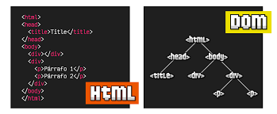

El DOM (Document Object Model) es una interfaz de programación que representa la estructura de HTML como un árbol de objetos, permitiendo a lenguajes como JavaScript acceder, modificar, estructurar y dar estilo.
Un evento en JavaScript son las señales de que algo sucedio en la página web con la interacción del usuario:
Muestra un mensaje emergente en el script.
Muestra un mensaje con un campo de texto y entrada de datos.
Imprime la información en la consola.
Depende del navegador, en navegadores como Chrome y edge es con CTRL + SHIFT + J. Si no, click derecho -> inspect -> console
Las ventajas de usar la consola a la hora de depurar, es que podemos visualizar mensajes de
consola que nos pueden ayudar a supervisar el flujo o nos ayuda a la detección de errores,
también nos permite inspeccionar variables.